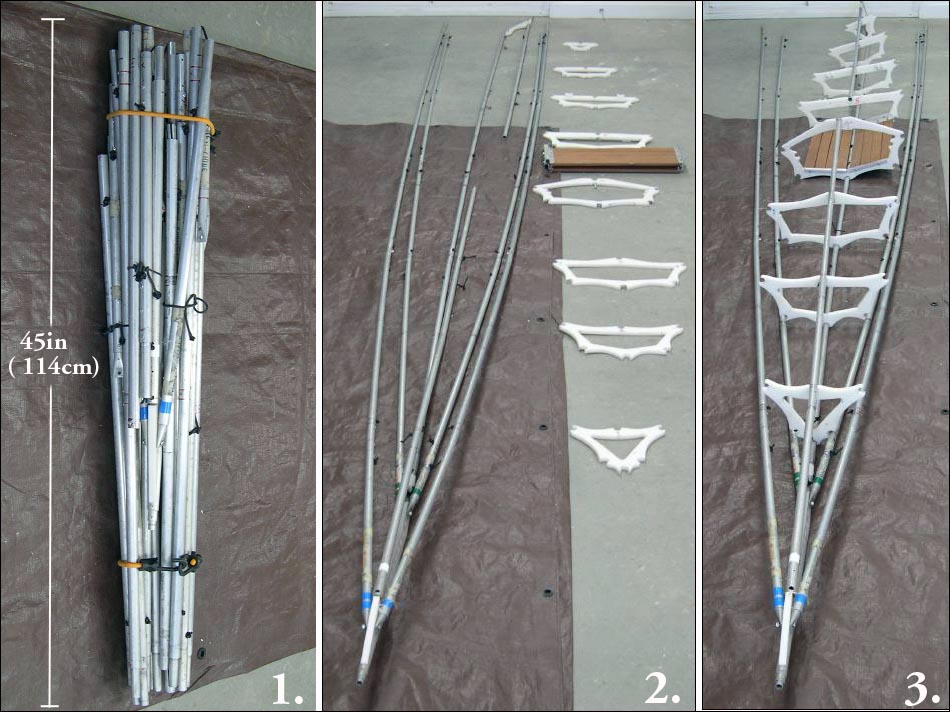

| Sea Rider Frame Changes (Oct 2005) | Menu Last Page Next Page |
|
 1. All tubes are connected by 1/8" shock cords. The gunwales, chines, and keel have 6 tube sections. The forward and aft deckridge have 4 sections each. The stringers are left connected to the bow at all times. This is a change from earlier folding methods. Except for the keel and deckridge, stringers are disconnected at the stern. 2. The stringers are layed out on the ground. Cross sections and floor are positioned in their approximate assembly location. 3. Cross sections and floor are attached and stringers are connected at the stern. |
|